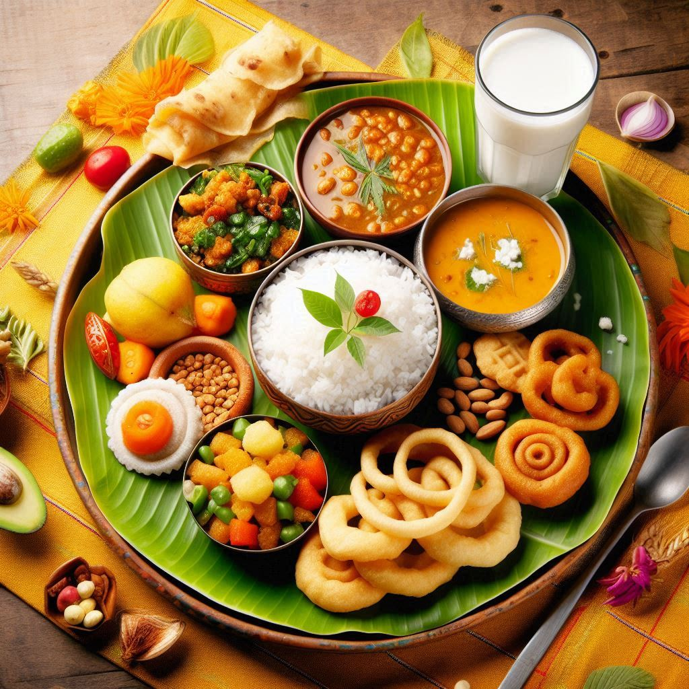
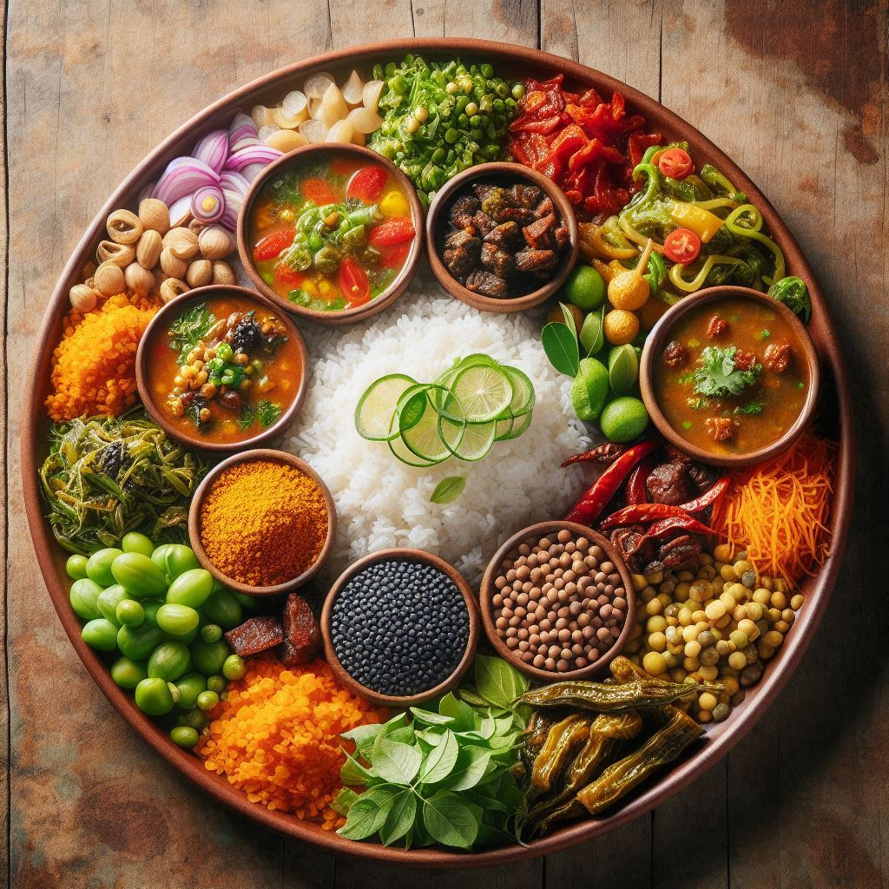

Chhattisgarh, often called the “Rice Bowl of India,” has a rich culinary heritage deeply influenced by its
agricultural traditions and tribal culture. The food here is simple yet flavorful, relying heavily on
locally available ingredients like rice, millets, lentils, green vegetables, and a variety of herbs and
spices. Both vegetarian and non-vegetarian dishes are popular, and there is a focus on organic and earthy
flavors.
1. Popular Staple Foods
- Rice: Rice is the primary staple food in Chhattisgarh, as the state is one of India’s largest
producers of rice. It is consumed in various forms, such as boiled rice, pakhala bhat (fermented
rice), and chila (rice pancakes).
- Lentils: Lentils, like dal, are a significant part of daily meals. They are typically cooked
with simple spices and served with rice or roti.
- Millets: Millet-based dishes are common, with ragi and jowar being widely used, especially in
tribal areas.
2. Traditional Dishes
- Chila: A popular breakfast dish, chila is a savory pancake made from rice flour and spices.
It is often served with chutney or curd.
- Fara: This is a healthy snack made from rice flour dough stuffed with spiced lentil paste. It
is steamed or boiled and served with chutney.
- Angakar Roti: A thick, crispy flatbread made from rice flour, angakar roti is a favorite in
rural areas and is usually paired with spicy curries or chutneys.
- Thethri: A savory, deep-fried snack made from rice flour and spices, thethri is often served
as an accompaniment to meals or enjoyed as a tea-time snack.
- Bafauri: Made from spiced gram flour, bafauri is a healthy steamed snack similar to
dumplings, often eaten with chutney.
3. Tribal Cuisine
- Bamboo Shoot Curry: Bamboo shoots are commonly used in tribal cooking, either stir-fried or
cooked in curries with a tangy tamarind base.
- Red Ant Chutney (Chapda): A unique and traditional tribal delicacy, this chutney is made
using crushed red ants and their eggs, combined with spices. It is believed to have medicinal
properties.
- Dehati Bada: A deep-fried snack made from soaked rice and urad dal, dehati bada is crisp on
the outside and soft inside, served with chutney.
4. Sweets and Desserts
- Khurmi: A traditional sweet snack made from wheat flour, jaggery, and ghee, khurmi is crispy
and mildly sweet, often served during festivals or special occasions.
- Arsa: Another popular sweet, arsa is made from rice flour and jaggery. It is deep-fried and
has a chewy texture, often enjoyed during festivals.
- Petha: A sweet made from pumpkin, petha is commonly found in Chhattisgarh’s local markets. It
is cooked with sugar syrup and has a translucent, soft texture.
- Gulgula: These are small sweet fritters made from wheat flour, jaggery, and sometimes
flavored with fennel seeds.


5. Curries and Side Dishes
- Bore Baasi: This is a traditional summer dish where leftover rice is soaked in water
overnight and eaten the next morning with curd, raw onions, green chilies, and pickles. It is
considered a refreshing and cooling dish.
- Dal Pithi: Dumplings made from wheat flour are cooked in a spicy lentil gravy. Dal Pithi is a
hearty and filling dish, often prepared during special occasions or family gatherings.
- Muthiya: These are steamed dumplings made from rice flour and spices, usually served with
chutney or as an accompaniment to a meal.
6. Pickles and Chutneys
- Ginger and Tamarind Chutney: A tangy chutney made with ginger, tamarind, and spices, it’s a
common accompaniment to snacks like chila and fara.
- Red Ant Chutney: A tribal specialty, this chutney is made from red ants and their eggs,
ground with spices. It has a strong flavor and is considered an acquired taste.
7. Non-Vegetarian Dishes
- Mutton Curry: Spicy mutton curry, prepared with local spices, is a delicacy served on special
occasions or during festivals.
- Fish Curry: With several rivers and lakes in the region, fish is a popular choice. Fish curry
is usually cooked with mustard or tamarind, giving it a tangy flavor.
8. Beverages
- Mahua Drink: Made from the flowers of the Mahua tree, this is a traditional alcoholic
beverage popular among tribal communities. It has a strong, sweet flavor and is consumed during
festivals and celebrations.
- Handia: A local rice beer, handia is made by fermenting rice and is consumed mainly by tribal
communities during social gatherings.
Conclusion
The cuisine of Chhattisgarh is a blend of simplicity and richness, deeply connected to the state’s
agrarian and tribal roots. From rice-based dishes like chila and fara to unique tribal delicacies like
bamboo shoot curry and red ant chutney, the food here offers a wide variety of flavors. Sweets like
khurmi and arsa showcase the love for traditional desserts, while the use of forest produce and local
ingredients keeps the cuisine close to nature. Whether it's the everyday meal or festive dishes, the
food of Chhattisgarh reflects the cultural diversity and heritage of the region.